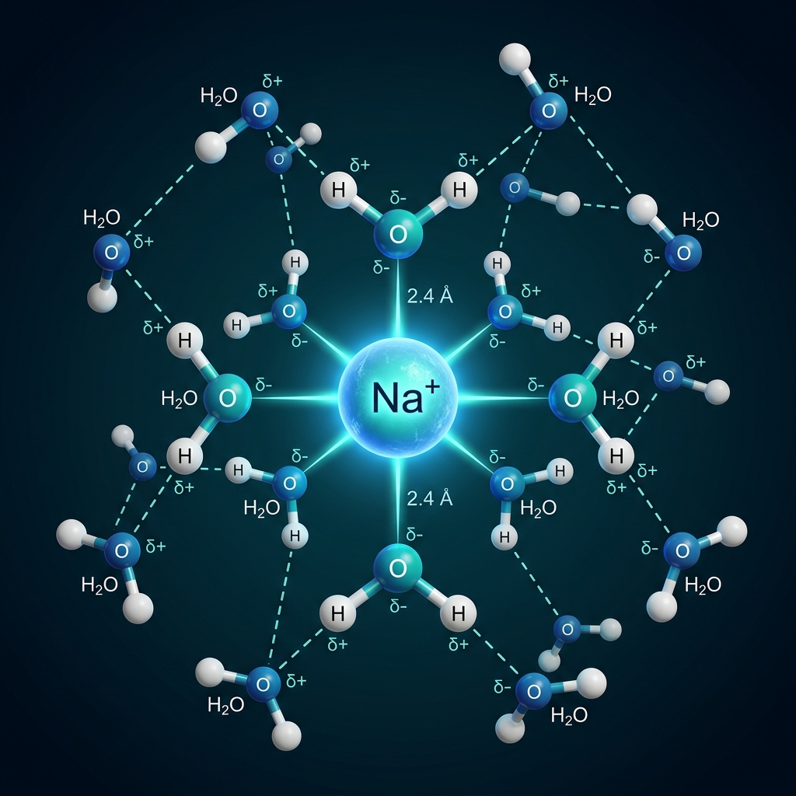
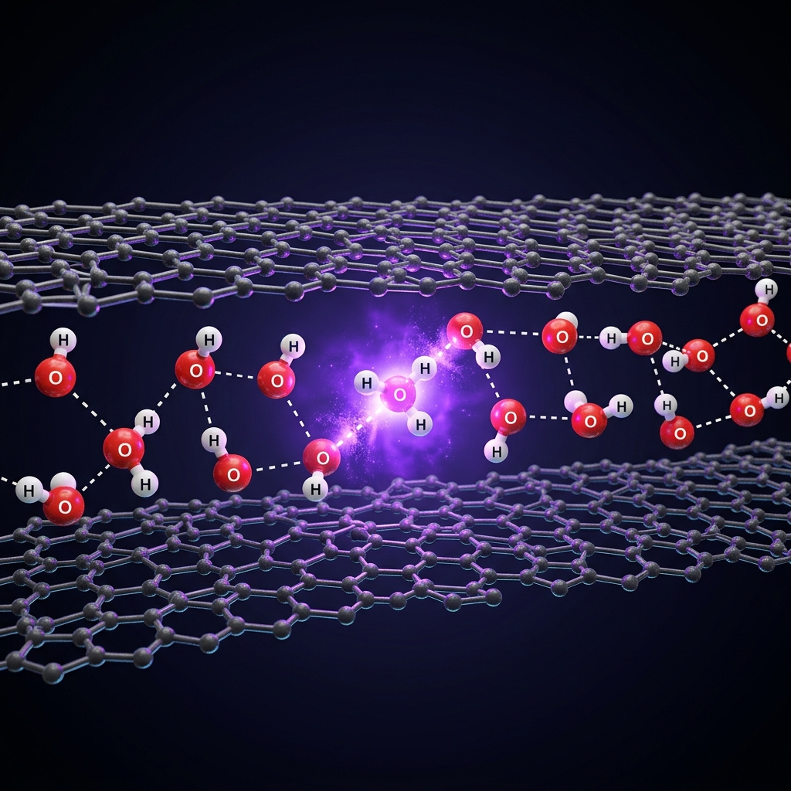
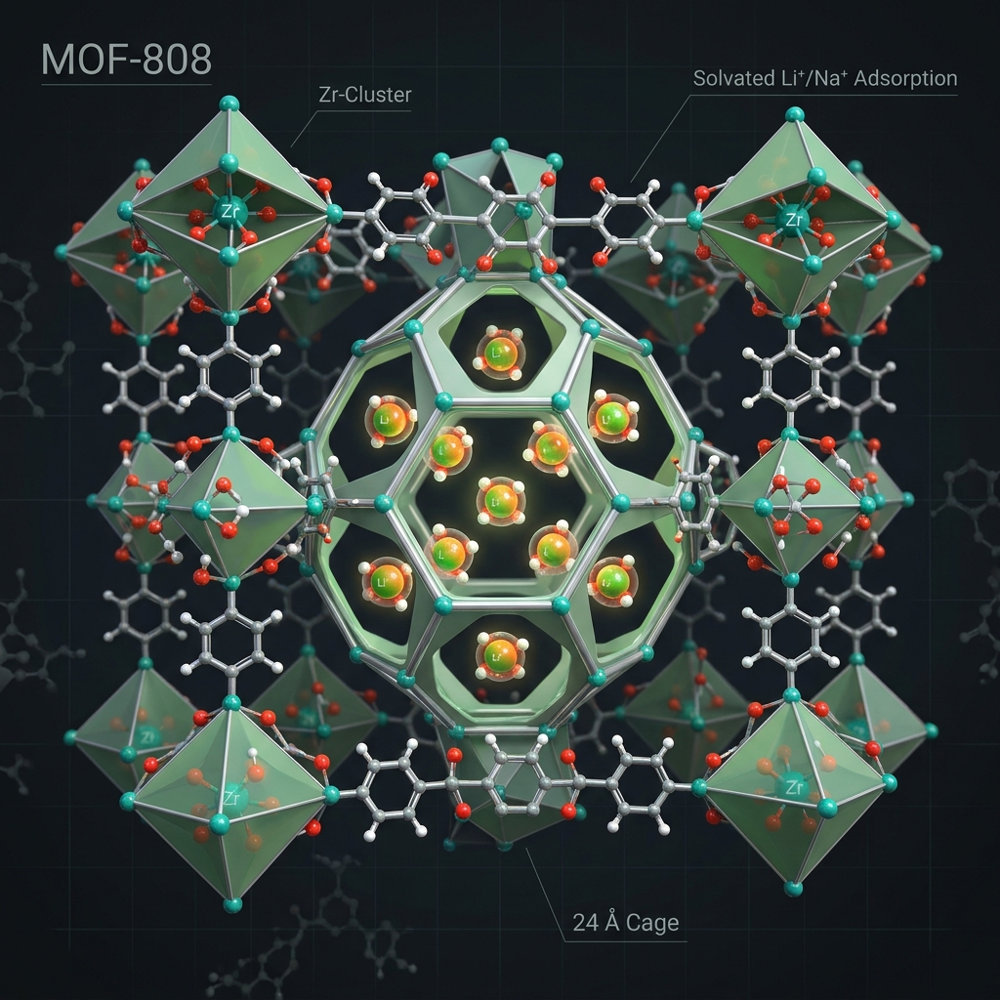
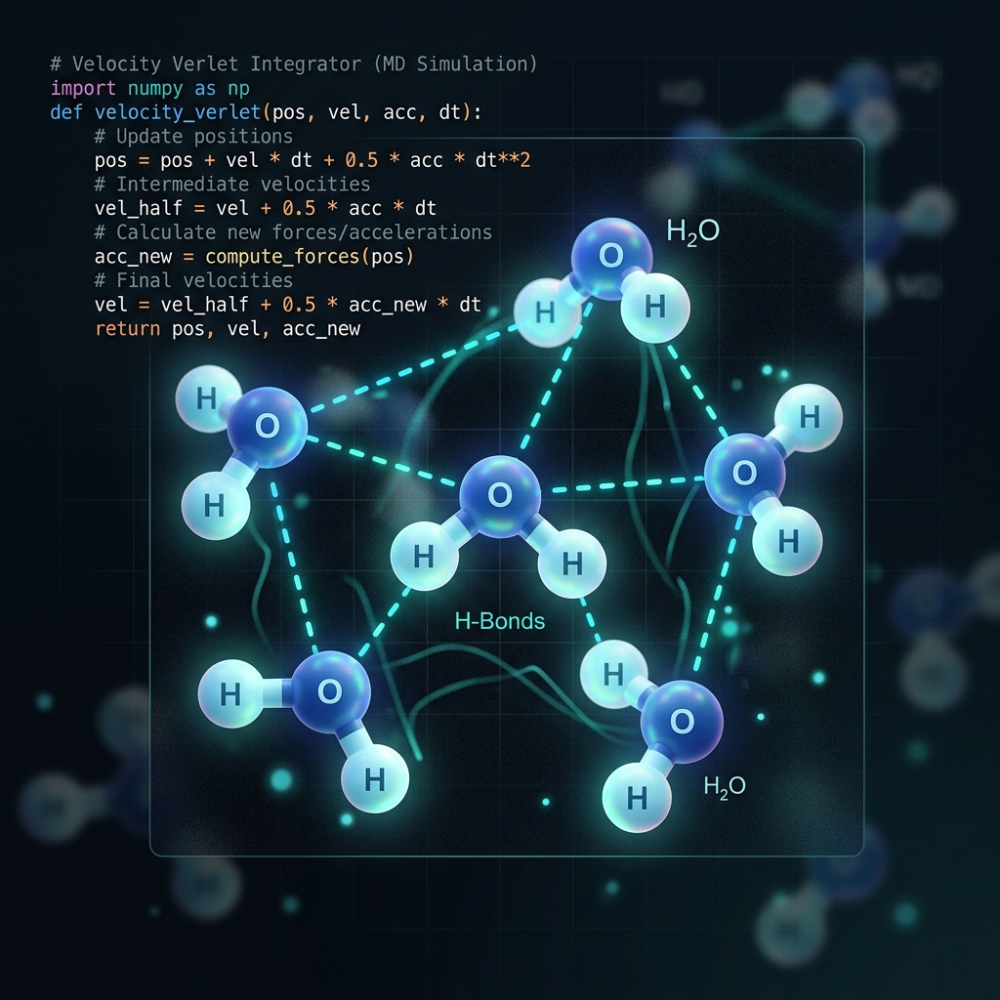

Expected 2028
University of California San Diego
Ph.D. in Chemistry with Prof. Francesco Paesani. GPA: 3.9/4.0.
Ph.D. Candidate in Chemistry · UC San Diego
I study how molecular environments control hydration thermodynamics, ion transport, nanoconfined water reactivity, and adsorption in porous materials using data-driven many-body potentials and molecular simulation.
About
I am a Ph.D. candidate in the Paesani group at UC San Diego, where I use many-body potentials, machine-learned force fields, and enhanced-sampling molecular dynamics to explain how solvation environments shape chemistry — from ion transport in electrolytes to reactions in nanoconfined water.
Featured Work
Education
Expected 2028
Ph.D. in Chemistry with Prof. Francesco Paesani. GPA: 3.9/4.0.
Jul. 2021 – Mar. 2023
M.S. in Chemistry. CGPA: 9.8/10.0.
Jul. 2018 – Jun. 2021
B.S. in Chemistry through Calcutta University. CGPA: 8.12/10.00.
Research
My projects use molecular dynamics, free-energy methods, and data-driven many-body potentials to connect molecular structure with thermodynamics, transport, and reactivity.

Hydration
Staged alchemical free-energy calculations for alkali metal and halide ions using MB-pol water, MB-nrg ion potentials, and many-body electrostatics.

Interfaces
Simulations of how sub-nanometer confinement, interfacial chemistry, and framework flexibility modulate acid-base equilibria and proton-transfer pathways.

Materials
Enhanced sampling and thermodynamic modeling of alkali metal ion adsorption from aqueous solution into metal-organic frameworks.
Publications
Molecular simulation, aqueous chemistry, nanoconfinement, and porous materials. Open an entry to read its abstract and follow the paper link.
* corresponding author; † equal contribution.

Metal–organic framework (MOF) quasi-solid electrolytes offer chemically tunable environments for ion transport, but the molecular roles of framework coordination and confined solvent remain unclear. We combine variable-temperature 7Li solid-state NMR with molecular dynamics simulations to investigate lithium transport in propylene carbonate-filled SU-102. The simulations identify Zr-associated, linker-associated, and fully solvated Li+ environments. Zr-associated sites provide the strongest thermodynamic stabilization, while the linker-associated state shows the greatest trial-weighted displacement; linker-to-linker hopping is the most frequent classified event in the sampled trajectories. Chemical color-diffusion nonequilibrium molecular dynamics yields an ionic conductivity of 1.34 ± 0.48 mS cm−1, comparable in order of magnitude to the experimental value of 0.52 mS cm−1. The results support a role for propylene-carbonate-assisted hopping between linker sites and point to a balance between framework stabilization and site-to-site exchange as a design principle for quasi-solid electrolytes.

Serine β-lactamases are bacterial enzymes that cause antibiotic resistance by rapid hydrolysis of β-lactam antibiotics. Development of efficient covalent inhibitors for serine β-lactamases requires an understanding of the factors that can increase the free energy barrier for hydrolysis of the covalent-intermediate formed by the β-lactamases and the ligands. We show that steric factors introduced by methyl substitution at a suitable position in an existing β-lactam drug can slow down its hydrolysis by sterically hindering the hydrolytic water molecule from approaching the reaction site. Through molecular simulations, we demonstrate that a weak cephalosporin, like cephalothin, can be revitalized with this strategy. An increase in the lifetime of the acyl–enzyme complex leads to the inhibition of serine β-lactamases.

Single-ion hydration free energies stringently test molecular models for aqueous ions, but quantitative comparison is complicated by the interplay of short-range ion–water interactions, long-range electrostatics, many-body polarization, and nuclear quantum effects (NQE). Here, we compute hydration free energies for alkali-metal cations (Li+–Cs+) and halide anions (F−–I−) using MB-nrg ion potentials in MB-pol water. Free energies are evaluated with a staged alchemical cycle in which ion–water interactions are introduced sequentially (charge, polarization, and explicit 2-body and 3-body terms), enabling stable sampling of each contribution. Across both ion families, MB-nrg/MB-pol reproduces the expected monotonic weakening of hydration with increasing ionic size and yields close agreement with experiment. Ion–water radial distribution functions show that electrostatics rapidly establishes the first hydration shell, while the explicit many-body corrections relax short-range overstructuring toward the fully interacting reference distribution.

The structural and dynamical properties of water confined in subnanometer, single-walled carbon nanotubes (CNTs) are investigated using molecular dynamics simulations. With radii ranging from 4 to 8 Å, we assess confinement-size effects using fully flexible CNTs with explicit carbon polarizability and the MB-pol water model. Density distributions reveal that single-file water chains form in the narrow (10,0) CNT, pentagonal ring structures form in the intermediate (15,0) CNT, and a two-layer arrangement forms in the wider (20,0) CNT. Angular distributions show that the influence of carbon polarization on water orientation grows with CNT diameter, accompanied by a pronounced tilt of water molecules toward the CNT wall. Simulations of vertically aligned CNT arrays demonstrate that intertube interactions significantly impact water dynamics: in stacked (20,0) configurations, intermittent hydrogen-bond lifetimes decrease by 20–25% and layer residence times drop by up to 20% relative to isolated CNTs.

The autoionization of water, a fundamental process in aqueous chemistry, is profoundly altered under nanoconfinement. The properties of the confining material determine the layer dependence of autoionization, dictating whether reactions are stabilized at the interface or in the subsurface. Under weak water–wall interactions, hydroxide is destabilized at the interface, leading the reaction to proceed preferentially in the subsurface. Conversely, under strong water–wall interactions, the interfacial and subsurface states are nearly isoenergetic, thereby diminishing the selectivity between the two regions. This contrast arises from confinement-enforced coordination motifs where hydronium remains tri-coordinated across environments, while hydroxide is restricted to tetra-coordination at the interface but adopts hypercoordinated states in the subsurface.

Water confined within nanometer-scale environments plays a central role in functional materials for nanofluidic and membrane-based applications, where acid–base equilibria and proton transport govern essential processes such as ion conduction, energy conversion, and chemical separations. At sub-nanometer scales, confinement and interfacial interactions dramatically reshape the molecular landscape, challenging conventional assumptions about pH and chemical reactivity. Here, we combine density-corrected density functional theory with machine-learned interatomic potentials to investigate the autoionization of water confined to quasi-two-dimensional monolayers within sub-nanometer slit pores. We find that extreme confinement markedly suppresses water autoionization, raising the effective pKw by more than two units. This suppression originates from hydroxide ion destabilization at interfaces, driven by restricted hydrogen bonding, hindered molecular reorientation, and a breakdown of Grotthuss proton transport caused by topological frustration in the hydrogen-bond network.

The growing global demand for critical metals has intensified the search for sustainable and efficient extraction methods. Metal–organic frameworks (MOFs), with their high surface area and tunable pore structures, offer great potential for selective ion uptake; however, a molecular-level understanding of ion uptake from dilute aqueous solutions remains incomplete. In this study, we employ free-energy calculations and enhanced sampling simulations to investigate alkali metal ion uptake in MOF-808, a prototypical hydrothermally stable MOF. Our results reveal that large pores provide a similarly stable environment for all studied ions, indicating a lack of intrinsic selectivity, whereas small pores exhibit distinct thermodynamic and kinetic preferences that govern ion uptake. Dehydrated alkali metal ions are stable within small pores, and free-energy profiles reveal that their transfer from large to small pores occurs with lower energy barriers than that of water molecules. Among these ions, Li+ faces the highest barrier due to its strong hydration shell, whereas K+ exhibits the greatest thermodynamic preference for uptake in its dehydrated state.

Developing a molecular-level understanding of the properties of water is central to numerous scientific and technological applications. However, accurately modeling water through computer simulations has been a significant challenge due to the complex nature of the hydrogen-bonding network that water molecules form under different thermodynamic conditions. The introduction of the MB-pol data-driven many-body potential energy function marked a significant advancement toward a universal molecular model capable of predicting the structural, thermodynamic, dynamical, and spectroscopic properties of water across all phases. By integrating physics-based and data-driven components, which correctly capture the delicate balance among different many-body interactions, MB-pol achieves chemical and spectroscopic accuracy, enabling realistic molecular simulations of water, from gas-phase clusters to liquid water and ice. In this review, we present a comprehensive overview of the data-driven many-body formalism adopted by MB-pol, highlight the main results and predictions made from computer simulations with MB-pol to date, and discuss the prospects for future extensions.
GitHub Projects
Educational coding materials and tutorials designed to introduce students and researchers to computational methods.

An interactive, module-based Jupyter Book guiding beginners through classical molecular simulations. Write toy molecular dynamics codes in Python from scratch—starting from Verlet integration and equations of motion, up to multi-atom structures with live visual outputs and LaTeX math formatting.
Beyond the Lab
Classroom instruction, conference presentations, scholastic achievements, and outreach activities.
Teaching & Mentorship
Conferences & Workshops
Selected presentations and hands-on workshops spanning aqueous chemistry, confinement, and molecular simulation.
Oral: “Hydration free energies of alkali and halide ions using data-driven many-body models.”
Poster: “Hydration Free Energies of Alkali Metal and Halide Ions Using Data-Driven Many-Body Models.”
Talk: “Confinement-Governed Autoionization of Nanolayered Water.”
Poster: “Thermodynamics of Alkali Metal Ions in MOF-808.”
Poster: “Thermodynamics of Alkali Metal Ion Uptake from Aqueous Solution in MOF-808.”
Presented a hands-on tutorial on molecular simulations using the MB-nrg potential with MBX and LAMMPS.
Poster: “Accurate Modeling of Aqueous Phase Chemistry with Rigorous Physical Principles.”
Poster: “Accurate Computational Modeling of Aqueous Phase Chemistry Across Phases and Interfaces.”
Scholastic Achievements
2026
Prestigious departmental honor from the Department of Chemistry and Biochemistry at UC San Diego, established to recognize graduate research excellence.
2022
Merit for Academic Excellence in the Master of Science in Chemistry at IIT Kanpur for the year 2021–2022.
2021
Secured All India Rank 80 in IIT-JAM’21 (Joint Admission Test for Masters), Chemistry.
2018 - 2023
$5,000 fellowship from the Government of India for outstanding undergraduate students, awarded for five years.
2016 - 2018
$700 fellowship from the Government of West Bengal (Jagadish Bose National Science Talent Search) for excellence in higher education.
Activities